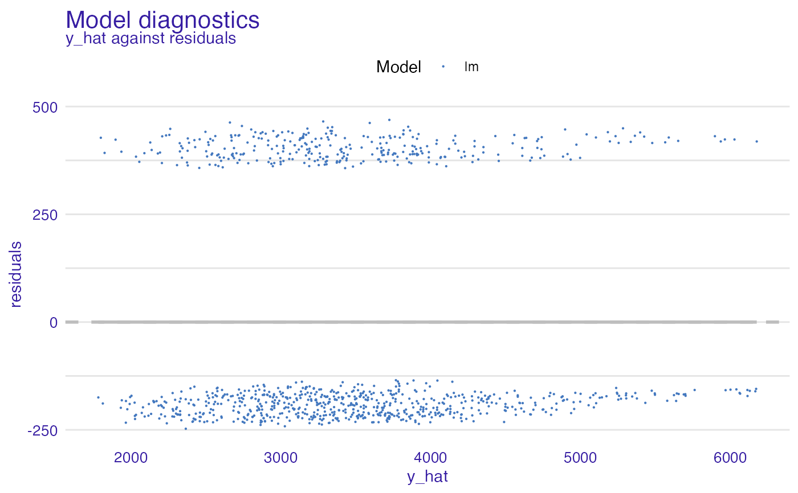
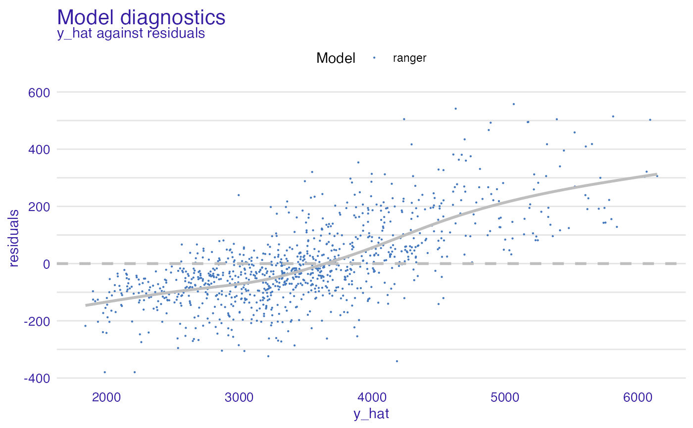
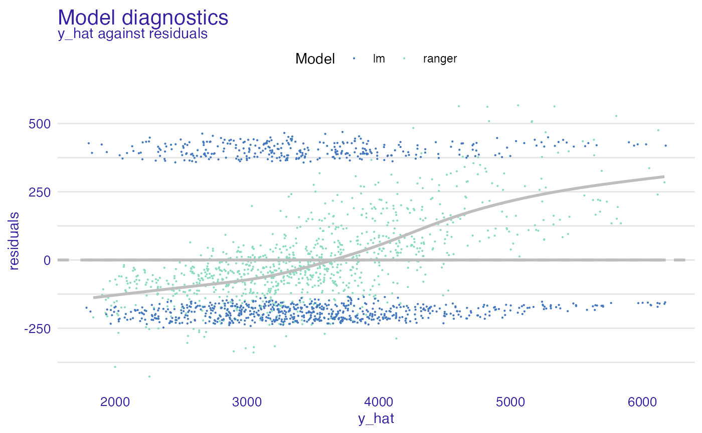
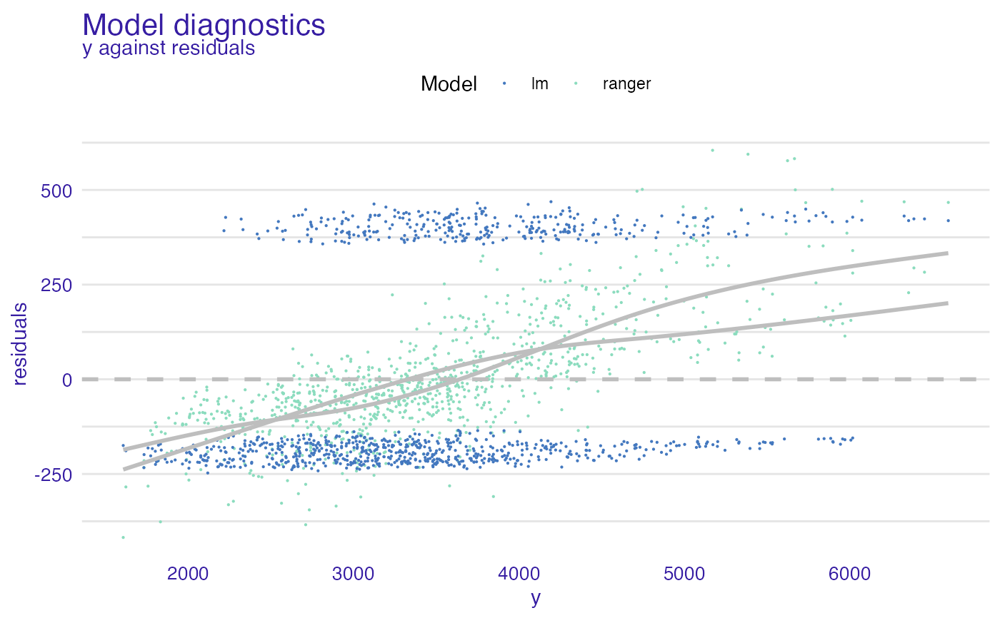
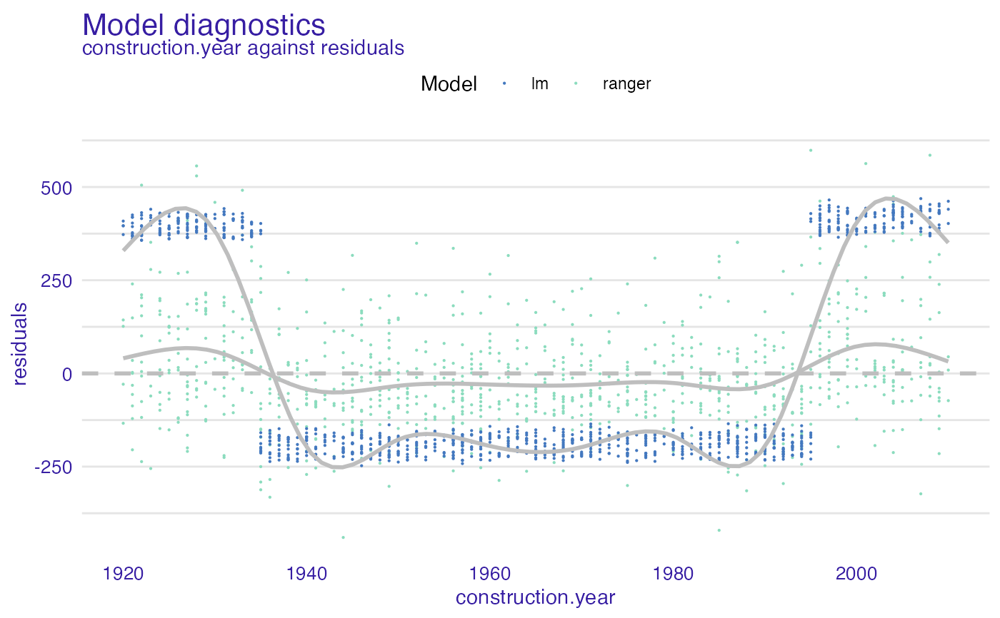
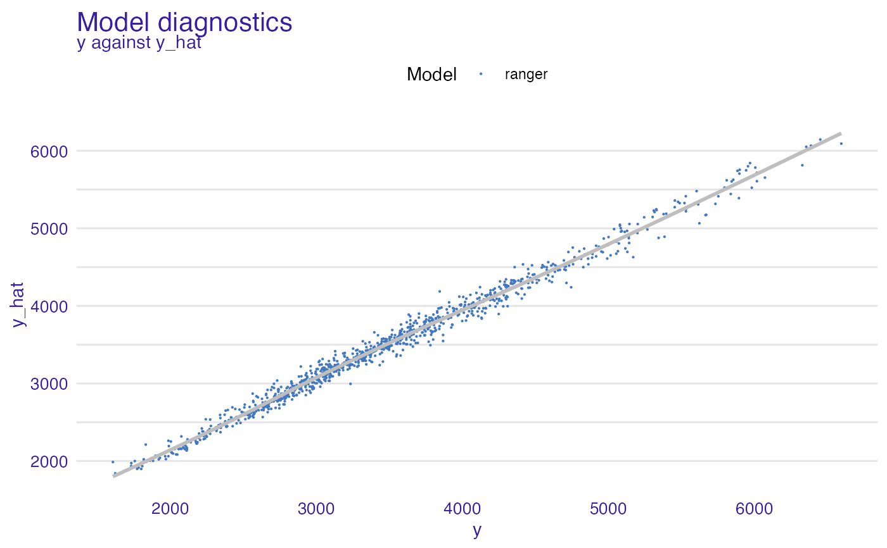

Plot Dataset Level Model Diagnostics
# S3 method for model_diagnostics plot(x, ..., variable = "y_hat", yvariable = "residuals", smooth = TRUE)
| x | a data.frame to be explained, preprocessed by the |
|---|---|
| ... | other object to be included to the plot |
| variable | character - name of the variable on OX axis to be explained, by default |
| yvariable | character - name of the variable on OY axis, by default |
| smooth | logical shall the smooth line be added |
an object of the class model_diagnostics_explainer.
apartments_lm_model <- lm(m2.price ~ ., data = apartments) explainer_lm <- explain(apartments_lm_model, data = apartments, y = apartments$m2.price)#> Preparation of a new explainer is initiated #> -> model label : lm ( default ) #> -> data : 1000 rows 6 cols #> -> target variable : 1000 values #> -> predict function : yhat.lm will be used ( default ) #> -> predicted values : No value for predict function target column. ( default ) #> -> model_info : package stats , ver. 4.0.3 , task regression ( default ) #> -> predicted values : numerical, min = 1781.848 , mean = 3487.019 , max = 6176.032 #> -> residual function : difference between y and yhat ( default ) #> -> residuals : numerical, min = -247.4728 , mean = 2.093656e-14 , max = 469.0023 #> A new explainer has been created!#> m2.price construction.year surface floor #> Min. :1607 Min. :1920 Min. : 20.00 Min. : 1.000 #> 1st Qu.:2857 1st Qu.:1943 1st Qu.: 53.00 1st Qu.: 3.000 #> Median :3386 Median :1965 Median : 85.50 Median : 6.000 #> Mean :3487 Mean :1965 Mean : 85.59 Mean : 5.623 #> 3rd Qu.:4018 3rd Qu.:1988 3rd Qu.:118.00 3rd Qu.: 8.000 #> Max. :6595 Max. :2010 Max. :150.00 Max. :10.000 #> #> no.rooms district y y_hat #> Min. :1.00 Mokotow :107 Min. :1607 Min. :1782 #> 1st Qu.:2.00 Wola :106 1st Qu.:2857 1st Qu.:2879 #> Median :3.00 Ursus :105 Median :3386 Median :3374 #> Mean :3.36 Ursynow :103 Mean :3487 Mean :3487 #> 3rd Qu.:4.00 Srodmiescie:100 3rd Qu.:4018 3rd Qu.:3932 #> Max. :6.00 Bemowo : 98 Max. :6595 Max. :6176 #> (Other) :381 #> residuals abs_residuals label ids #> Min. :-247.5 Min. :134.9 Length:1000 Min. : 1.0 #> 1st Qu.:-202.8 1st Qu.:180.3 Class :character 1st Qu.: 250.8 #> Median :-172.8 Median :212.4 Mode :character Median : 500.5 #> Mean : 0.0 Mean :260.0 Mean : 500.5 #> 3rd Qu.: 381.4 3rd Qu.:381.4 3rd Qu.: 750.2 #> Max. : 469.0 Max. :469.0 Max. :1000.0 #>#># \donttest{ library("ranger") apartments_ranger_model <- ranger(m2.price ~ ., data = apartments) explainer_ranger <- explain(apartments_ranger_model, data = apartments, y = apartments$m2.price)#> Preparation of a new explainer is initiated #> -> model label : ranger ( default ) #> -> data : 1000 rows 6 cols #> -> target variable : 1000 values #> -> predict function : yhat.ranger will be used ( default ) #> -> predicted values : No value for predict function target column. ( default ) #> -> model_info : package ranger , ver. 0.12.1 , task regression ( default ) #> -> predicted values : numerical, min = 1864.79 , mean = 3489.617 , max = 6124.471 #> -> residual function : difference between y and yhat ( default ) #> -> residuals : numerical, min = -416.9617 , mean = -2.598236 , max = 586.5273 #> A new explainer has been created!#> m2.price construction.year surface floor #> Min. :1607 Min. :1920 Min. : 20.00 Min. : 1.000 #> 1st Qu.:2857 1st Qu.:1943 1st Qu.: 53.00 1st Qu.: 3.000 #> Median :3386 Median :1965 Median : 85.50 Median : 6.000 #> Mean :3487 Mean :1965 Mean : 85.59 Mean : 5.623 #> 3rd Qu.:4018 3rd Qu.:1988 3rd Qu.:118.00 3rd Qu.: 8.000 #> Max. :6595 Max. :2010 Max. :150.00 Max. :10.000 #> #> no.rooms district y y_hat #> Min. :1.00 Mokotow :107 Min. :1607 Min. :1865 #> 1st Qu.:2.00 Wola :106 1st Qu.:2857 1st Qu.:2947 #> Median :3.00 Ursus :105 Median :3386 Median :3427 #> Mean :3.36 Ursynow :103 Mean :3487 Mean :3490 #> 3rd Qu.:4.00 Srodmiescie:100 3rd Qu.:4018 3rd Qu.:3951 #> Max. :6.00 Bemowo : 98 Max. :6595 Max. :6124 #> (Other) :381 #> residuals abs_residuals label ids #> Min. :-416.962 Min. : 0.055 Length:1000 Min. : 1.0 #> 1st Qu.: -90.349 1st Qu.: 38.132 Class :character 1st Qu.: 250.8 #> Median : -23.639 Median : 80.144 Mode :character Median : 500.5 #> Mean : -2.598 Mean :107.248 Mean : 500.5 #> 3rd Qu.: 58.264 3rd Qu.:150.023 3rd Qu.: 750.2 #> Max. : 586.527 Max. :586.527 Max. :1000.0 #>#>#>#>#>#># }